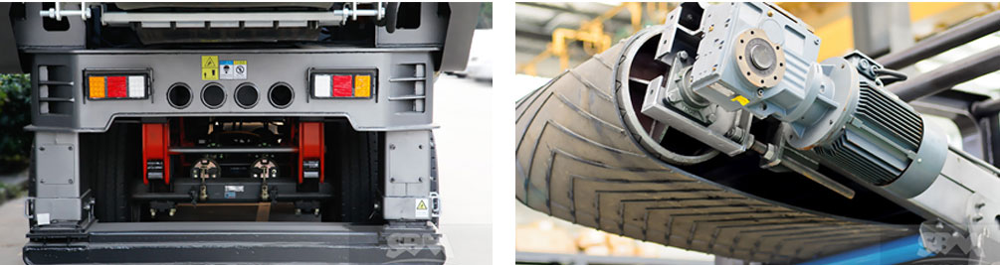

As a new generation of portable crusher plant, portable crusher plant has the most complete product models in the currently history. It has 72 kinds of models for clients to selection, which can fully meet the customers of coarse crushing, fine crushing, super fine production demand. High quality and high performance product almost include mineral ore, construction industry.
In the past, the traditional quarry crusher machine can only meet the single needs of customers. When the customer needs to buy new equipment to meet the different materials production requirements, so that consumers can not only put more cost of capital, but also bring huge economic pressure.
Portable crusher plant has 7 modules: coarse crushing, medium crushing screening, independent working, fine crushing screening, fine crushing washing, three combinations and four combinations and so on. They will meet the consumer's different requirements.
This portable crushing plant has 7 modules and 72 kinds of models. One kind of machine body can be with ten kinds of different machine types to meet customers’ production requirements. In each module, you can complete different production needs that only need to change the host system.
In a short time, it can be realized in the same body of different types of feeding unit, crushing unit processing capacity. The perfect match between the various systems, can ensure that the device can better adapt to a variety of production needs, to ensure that the customer's consumer to get the maximum interests.
Portable crushing station belongs to the new type portable copper ore crusher. It perfectly realizes the win-win between economic benefits and environment benefits. This portable crusher machine can flexibly move to the working site and save the transportation costs and investment costs. As the new crusher machine, it brings new development for mineral ore, construction materials processing market. Does the K series portable crusher keep the value?

Investment analysis A: Maximize interests
Our portable crusher plant includes 7 modules and 72 different kinds of models. Each module can realize the following: one kind of machine body with over 10 kinds of models to be used. To meet clients’ different production requirements, it just needs to change the main machine and it can realize the different final products size production requirement in short time. It can help clients to realize maximize interests.
Investment analysis B: Large customer choice space
Portable crusher plant introduces the high efficient jaw crusher, cone crusher and impact crusher machine to meet coarse crushing, medium crushing and fine crushing requirements. Depending on the specific economic conditions and the specific production requirements, clients can choose the most suitable production machines. You can choose the high-end main machine or low-end main machine as your like.
Investment analysis C: Depreciation value, Strong investment cash
Depending on the above analysis, portable crusher plant has very well universality and interchangeability. In the future, if you want to transfer this machine, you can just change the main machine to suit the next buyer’s production requirements and it will reduce the depreciation value cost and it has very strong investment cash ability.
When the portable crusher plant is put on the market, it is welcomed by the worldwide clients and has got high value from customers. Why is it so popular? And why does it meet different clients’ production requirements? Here will show you the 5 technical secrets of K series portable crusher plant machine.
Our portable crusher plant has optimized the machine models. The product series is the most complete. The salesman can provide clients more abundant portable plant working project to suit the working site specific situations. The whole set models can simplify the production process and it can provide the directly support for clients.
This portable crusher frame is used as the carrying platform. The clients can flexibly change the main machine depending on customer's specific production requirements to realize the multi-purpose with one machine. Besides this, this portable crusher machine can be used as main machine’s mix adjustment in some stage. It can process the changeful sand stone processing in remote area.
The grid preliminary screening technology can the adjustable vibrating screening angle can largely show the processing effects with our portable copper ore crusher to sandstones. It can realize high output and low energy consumption working mode.
The new machine body material adopts the low temperature resistant and vibration resistant material --- Q345B steel to replace the original Q235A steel. It has stronger strength.
Compared with the last generation portable copper ore crusher, this new series portable crusher plant machine increases the water spray dust suppression device. In the actual production line, it can maximum reduce the dust in the air around the working site.